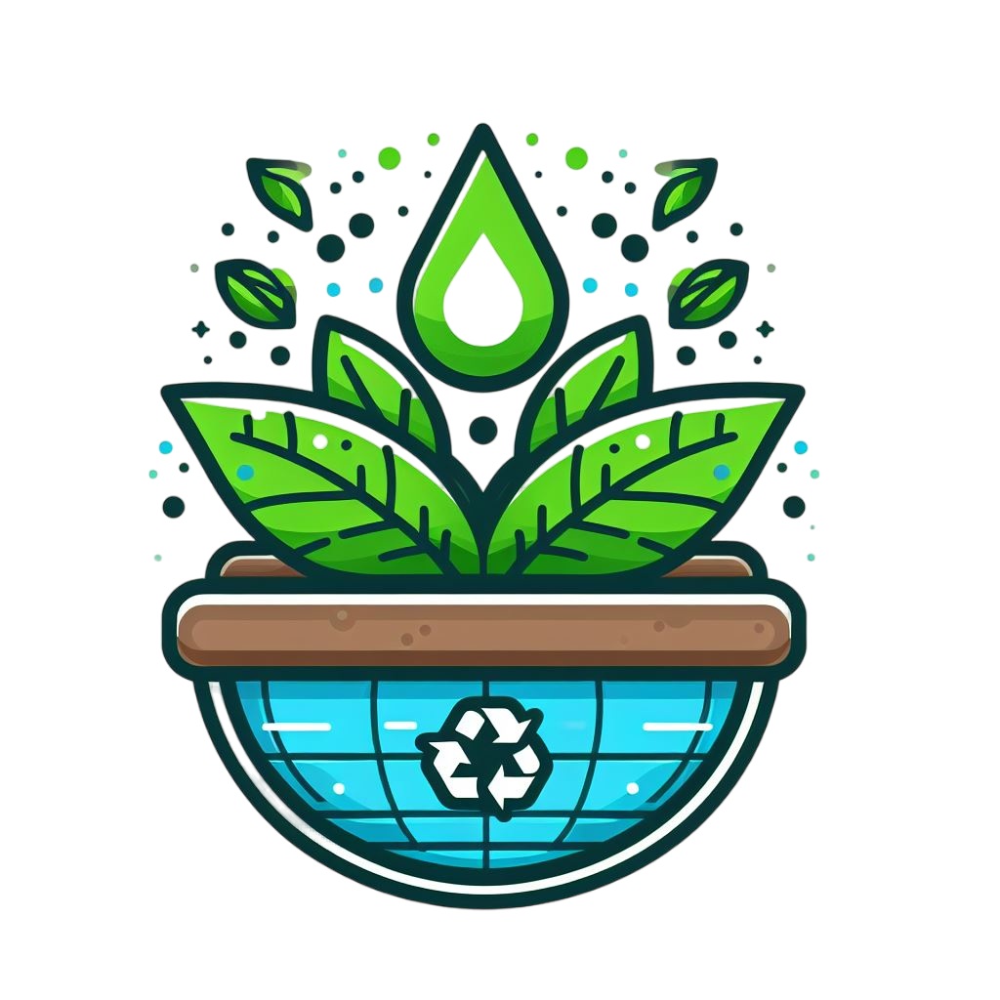

<mat-toolbar class="toolbar-container">
  
  <span class="spacer"></span>
  <button mat-button routerLink="/" routerLinkActive="active-link" [routerLinkActiveOptions]="{ exact: true }">Inicio</button>
  <button mat-button routerLink="/catalog" routerLinkActive="active-link">Catálogo</button>
  <button mat-button routerLink="/service" routerLinkActive="active-link">Servicios</button>
</mat-toolbar>

